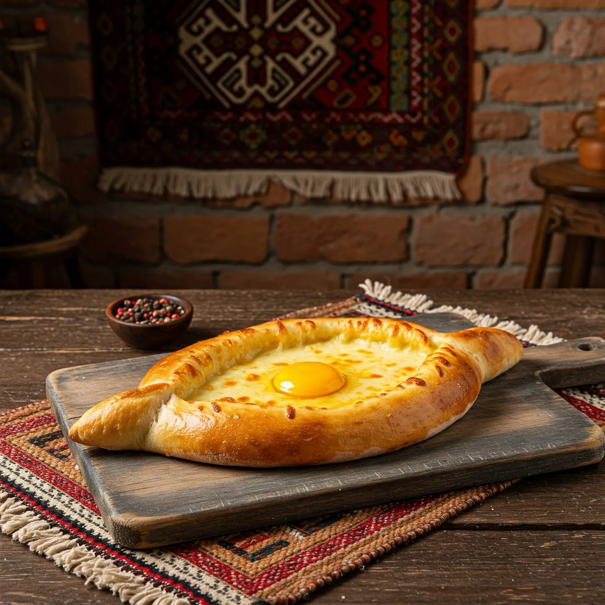

ხინკალი

- საქონლის ხორცი
- ღორის ხორცი
- ხახვი
- ნიორი (სურვილისამებრ)
- მარილი
- შავი პილპილი
- წითელი პილპილი (სურვილისამებრ)
- ქინძი (სურვილისამებრ)
- წყალი ან ბულიონი (რომ გულს წვენი ჰქონდეს)
აჭარული ხაჭაპური

ცომისთვის
- ფქვილი
- თბილი წყალი ან რძე
- საფუარი (მშრალი ან ცოცხალი)
- შაქარი
- მარილი
- ზეთი ან კარაქი
გულისთვის
- სულგუნი
- იმერული ყველი
- კვერცხი (თითო ხაჭაპურზე 1 ცალი)
- კარაქი